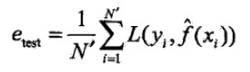

训练误差与测试误差
学习方法评估的标准：
基于损失函数的模型的训练误差
模型的测试误差

测试误差展示了学习方法对未知的数据的测试能力，也称为泛化能力
统计学习方法时采用的损失函数，未必是评估时使用的损失函数。但使用相同的函数为佳。
过拟合与模型选择
学习时选择的模型包含的参数过多，导致预测学习模型时效果很好，但是预测未知函数效果很差。
因此选择模型（参数）要逼近真模型。
选择模型的方法–正则化与交叉验证
正则化
即罚项。模型复杂度的单调递增函数。这样可以选择经验风险和模型复杂度同时小的模型。
交叉验证
随机将数据集分成三个部分：训练集，验证集（用于对模型的选择）和测试集。选择对验证集有最小预测误差的模型。
简单交叉验证
只分为训练集和测试集。选择测试集测试后，测试误差最小的模型。
S折交叉验证
应用最多。随机将数据分为S个互不相交，大小相同的子集，利用S-1个训练，余下的测试，并重复S次。最后选出平均误差最小的模型。
留一交叉验证
当S=N时（N为数据集的容量），此方法在数据缺乏时使用。